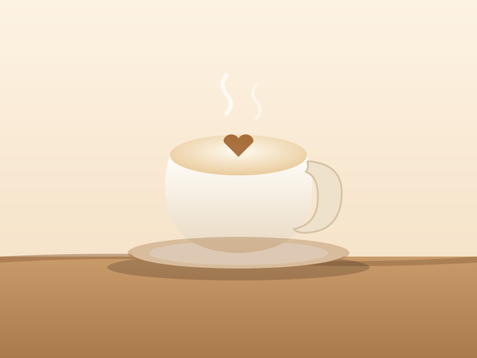
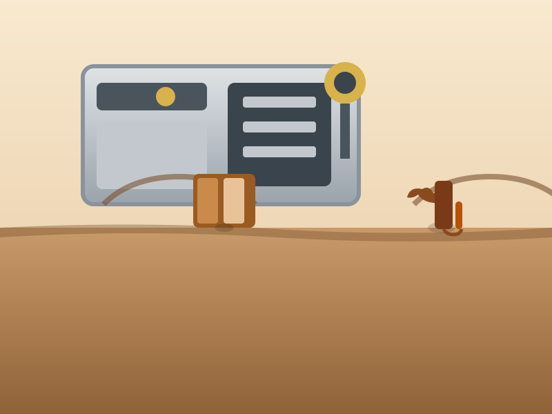

Эспрессо
Тридцать миллилитров на зерне свежей обжарки. Двойной — 1 200 ₸.
900 ₸Алматы · центр · с 2021
Небольшая кофейня в центре Алматы: варим кофе из зерна свежей обжарки, по утрам подаём завтраки, днём у нас тихо — можно поработать.
Ежедневно 8:00–22:00 · Алматы, центр · Kaspi QR
«Дәме» открыли в 2021 году мы вдвоём — без инвесторов и громких вывесок. Зерно берём у алматинского обжарщика небольшими партиями, молоко — у местного поставщика. Меню короткое, потому что всё, что в нём есть, мы готовим сами и каждый день. К вечеру остаётся пара десертов, и мы их не доносим — так честнее.





“Хожу почти каждый день — капучино стабильно вкусный, что для кофеен редкость.”
Айжан · ★★★★★“Хороший фильтр и приятная атмосфера. В обед тесно, лучше до 11.”
Дамир · ★★★★☆“Латте на овсяном без доплаты. Десерты реально свежие.”
Малика · ★★★★★Алматы, центр · Ежедневно 8:00–22:00
+7 707 111 22 33 · hello@dame-coffee.kz